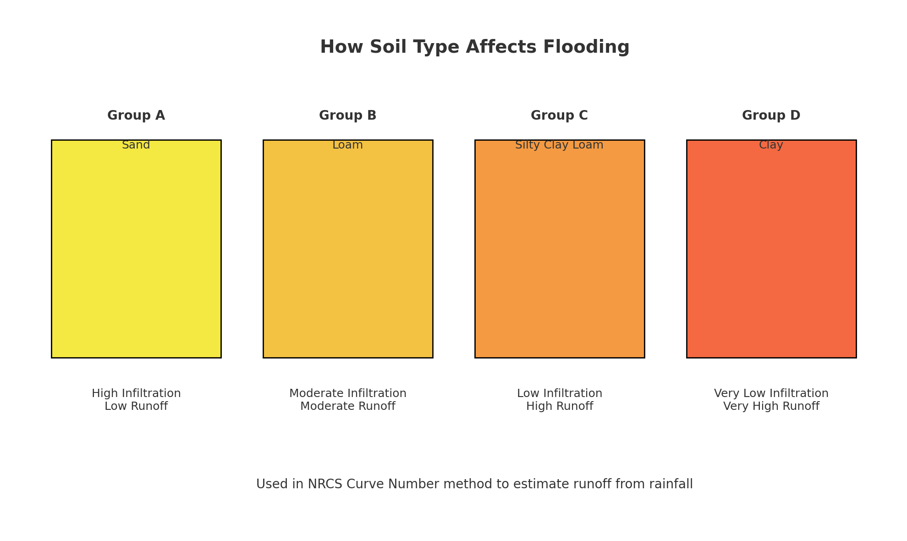
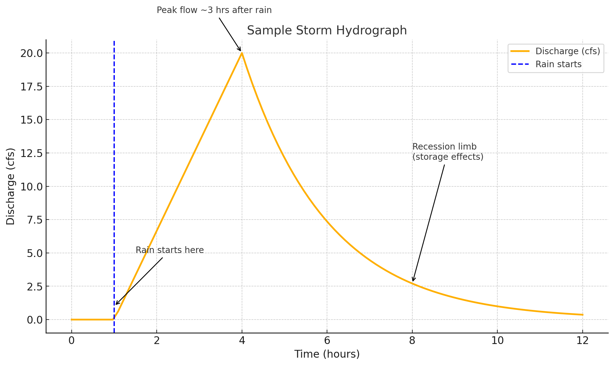

0. Communication Literacy#
Course Website
Readings/References#
ELI5 / Simplified Explanations
Feynman, R. P. (1999). The Pleasure of Finding Things Out. Perseus Books. Describes the “Feynman Technique” of learning by simplification and explanation, now widely adapted in education.
Brown, P. C., Roediger, H. L., & McDaniel, M. A. (2014). Make It Stick: The Science of Successful Learning. Harvard University Press. Emphasizes retrieval and elaboration as key to durable learning, which the ELI5 method practices.
Bransford, J. D., Brown, A. L., & Cocking, R. R. (Eds.). (2000). How People Learn: Brain, Mind, Experience, and School. National Academy Press. Advocates for adaptive expertise and learning through teaching, which ELI5 fosters.
Chi, M. T. H. (2009). Active-Constructive-Interactive: A Conceptual Framework for Differentiating Learning Activities. Topics in Cognitive Science, 1(1), 73–105. Supports constructivist value of restating and simplifying as active learning.
Infographics
Cairo, A. (2013). The Functional Art: An Introduction to Information Graphics and Visualization. New Riders. Emphasizes visual explanations as essential communication tools in technical fields.
Tufte, E. R. (2001). The Visual Display of Quantitative Information. Graphics Press. Gold standard reference for effective visual communication of data and complex ideas.
McCandless, D. (2014). Knowledge is Beautiful. HarperCollins. Demonstrates how layered meaning and simplification can be elegantly combined in infographic design.
Zambrano, R. et al. (2020). Designing Effective Infographics in STEM Education: A Case Study on Climate Change. International Journal of STEM Education, 7(1), 18. Directly supports use of infographics for science and engineering communication to non-experts.
Annotated Graphs
Wainer, H. (1997). Visual Revelations: Graphical Tales of Fate and Deception from Napoleon Bonaparte to Ross Perot. Lawrence Erlbaum Associates. Argues for annotations and narrative within graphs to guide interpretation.
Kosslyn, S. M. (2006). Graph Design for the Eye and Mind. Oxford University Press. Details cognitive load reduction and visual processing in effective graphs, including annotation.
Shah, P., & Hoeffner, J. (2002). Review of Graph Comprehension Research: Implications for Instruction. Educational Psychology Review, 14(1), 47–69. Summarizes research on student comprehension of graphs, finding that explanatory annotation significantly improves understanding.
Bowen, G. M. et al. (2014). Graphs as Tools: Learning to Use Graphs to Construct Knowledge in Science Learning. Canadian Journal of Science, Mathematics and Technology Education, 14(1), 9–24. Advocates explicit instruction in graph annotation to foster interpretation and communication skills.
Videos#
Purpose and Implementation for Engineering Hydrology (CE 3354)#
In alignment with Texas Tech University’s Communication Literacy (CL) requirement, this course equips students with essential communication skills tailored to the professional practice of civil and environmental engineering. Recognizing that hydrologic analysis must be conveyed not only through technical reports but also through clear visualizations and accessible explanations, the course includes structured assignments designed to foster clarity, fluency, and audience awareness across multiple communication modes.
In the asynchronous distance format of this course, classical modalities such as in-person team presentations are not feasible. While a design report remains possible, collaborative authorship across remote locations presents significant logistical challenges. Instead, students will complete a series of individual communication artifacts to demonstrate their communication literacy.
The CL-specific activities in this course include:
Video-style explanations that demonstrate the ability to explain “how-to” hydrologic concepts for technical or non-technical audiences. This activity emphasizes presentation fluency in a distance-compatible format.
ELI5-style written explanations that simplify complex hydrologic topics for non-specialist readers, reflecting the Feynman Method’s emphasis on learning through explanation.
Annotated technical graphs that showcase student proficiency in visual communication and the interpretation of hydrologic data.
Infographics that visually communicate watershed, soil, or runoff relationships in a format accessible to decision-makers, policymakers, or the general public.
These assignments reflect the transactional nature of engineering communication, requiring students to adapt their messages to suit diverse audiences and platforms. Through this curriculum, students develop proficiency in discipline-specific communication and gain the professional literacy needed to function ethically and effectively in a global, interdisciplinary context.
Communication Literacy Assignments and Rubrics#
This sub-section contains rubrics and sample artifacts for four styles of communication exercises in the Engineering Hydrology online course. These are aligned with the program-level Communication Literacy (CL) criteria: clarity, fluency in mode, and audience awareness.
All CL assignments will be peer-scored using an evaluation form (like a survey), and quiz questions will be generated for examinations based upon student produced content.
Video Explainer#
Create a video (YouTube or similar mode) to demonstrate an ability to explain “how-to” hydrologic concepts for technical or non-technical audiences.
Rubric (Score out of 15)#
Criterion |
Excellent (5) |
Acceptable (3) |
Unacceptable (1) |
|---|---|---|---|
Clarity |
Accurate and well-organized explanation |
Mostly clear but contains minor confusion |
Disorganized or technically incorrect |
Fluency in Mode |
Smooth narration; visuals clearly support message |
Acceptable pacing or visual/text integration |
Jumbled audio or ineffective visuals |
Audience Awareness |
Tone, style, and complexity appropriate to student audience |
Partially adapted to audience |
Not tailored to the audience |
Sample Prompt#
Explain how time of concentration affects hydrograph shape using an example watershed.
Sample Summary#
“In this 3-minute video, I explain how a watershed’s time of concentration determines the steepness and timing of peak discharge. I compare a steep-sloped basin versus a flat one and show their different hydrograph shapes using simple animations.”
ELI5 (Explain Like I’m 5) Explanation#
Written content to simplify complex hydrologic topics for non-specialist readers, reflecting the Feynman Method’s emphasis on learning through explanation.
Rubric (Score out of 15)#
Criterion |
Excellent (5) |
Acceptable (3) |
Unacceptable (1) |
|---|---|---|---|
Clarity |
Simplifies ideas using analogies; no jargon |
Mostly simplified but retains minor jargon |
Too technical or unclear |
Fluency in Writing |
Logical structure, smooth flow |
Slightly repetitive or choppy |
Rambling or grammatically flawed |
Audience Awareness |
Clearly aimed at non-technical audience |
Some effort to simplify |
Not tailored to audience |
Example Prompt#
Explain infiltration using the Green-Ampt model.
Sample ELI5 Explanation#
“Imagine pouring water on a sponge. At first, the water disappears fast—it’s super thirsty. That’s the ground soaking it up. But over time, the sponge gets full, and water moves slower. The Green-Ampt model is like watching how fast a sponge drinks based on how dry it was, how tight it holds water, and how hard you’re pouring.”
Infographic#
Fact sheet(s), poster, or images that visually communicate hydrologic concepts or relationships in a format accessible to decision-makers, policymakers, or the general public.
Rubric (Score out of 15)#
Criterion |
Excellent (5) |
Acceptable (3) |
Unacceptable (1) |
|---|---|---|---|
Clarity |
Key ideas clearly presented using visual logic |
Some clutter or unclear organization |
Disorganized or misleading |
Visual Fluency |
Professional appearance; consistent layout and design |
Minor inconsistencies, but usable |
Distracting or poorly formatted |
Audience Awareness |
Designed for non-expert viewer or policymaker |
Some adaptation to audience |
Assumes too much technical background |
Example Topic#
Produce an infographic to illustrate the relationship of Hydrologic Soil Groups and Runoff Potential
Example Deliverable/Description#
Title: “How Soil Type Affects Flooding”
Icons: Raindrop, sponge, runoff arrow
Side-by-side soil profiles:
Group A (sand): rapid infiltration
Group D (clay): surface runoff dominates
Caption: “Used in Curve Number method to estimate storm runoff.”
Example Infographic#

Annotated Graph#
Technical graphs with annotation to showcase proficiency in visual communication and the interpretation of hydrologic data
Rubric (Score out of 15)#
Criterion |
Excellent (5) |
Acceptable (3) |
Unacceptable (1) |
|---|---|---|---|
Clarity |
Labels, units, and annotations are easy to follow |
Some missing labels or explanations |
Hard to interpret or missing axes/units |
Visual Fluency |
Graph type appropriate; formatting consistent |
Basic presentation with some layout issues |
Poor design or wrong chart choice |
Audience Awareness |
Highlights key takeaways for reader |
Partial guidance provided |
Reader left to interpret everything |
Example Topic#
Produce an annotated graph for a Storm Hydrograph from 1” Rainfall
Example Deliverable/Description#
X-axis: Time (hr), Y-axis: Discharge (cfs)
Curve: rising limb, peak, recession limb
Annotations:
“Rain starts here”
“Peak discharge ~3 hours later”
“Slow return to baseflow—due to soil and channel storage”
Example Annotated Graph#
